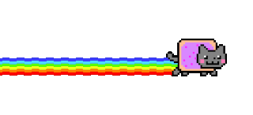

生活日誌
年份
圖表類型
Radar
Polar

ACG心得
年份
分類
評分
數量
圖表類型
Radar
Polar
創作動機
某天整理資料時，突然發覺資料變好多喔，那484應該要有個視覺化之類的。
功能說明
就一堆圖表，因為我找不到Radar和Polar的icon，所以我隨便找2個感覺很帥的圖。
X軸都固定是月份，Y軸都是數量，其他的就自己按看看。
心得感想
生活的可能因為有些數量差異都不大，所以就算用成圖表也看不出甚麼變化；果然垃圾話極多。
ACG的用評分去看，分的項目太多反而很亂；動畫的比例極高，然後1分的也不少，難道我沒有看動畫的眼光嗎?
線性圖或其他有節點的圖因為滑鼠圖標不是正常的，所以很難滑到點上，但我還是不會換回來的，這是阿宅的堅持。